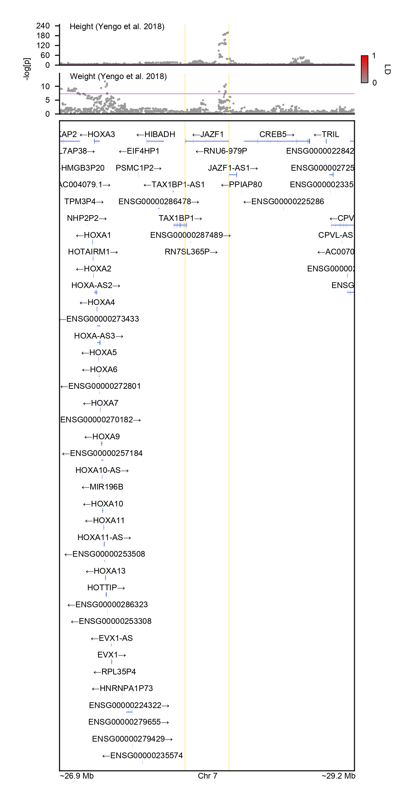
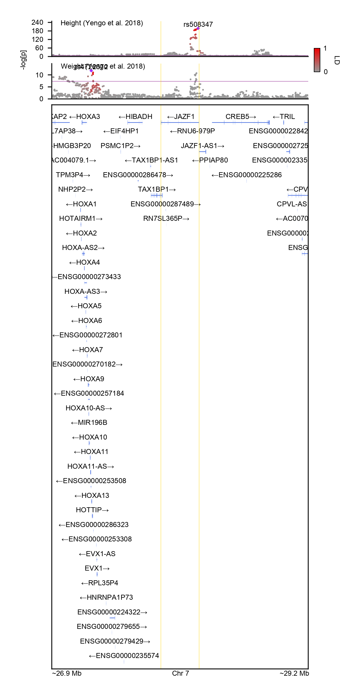
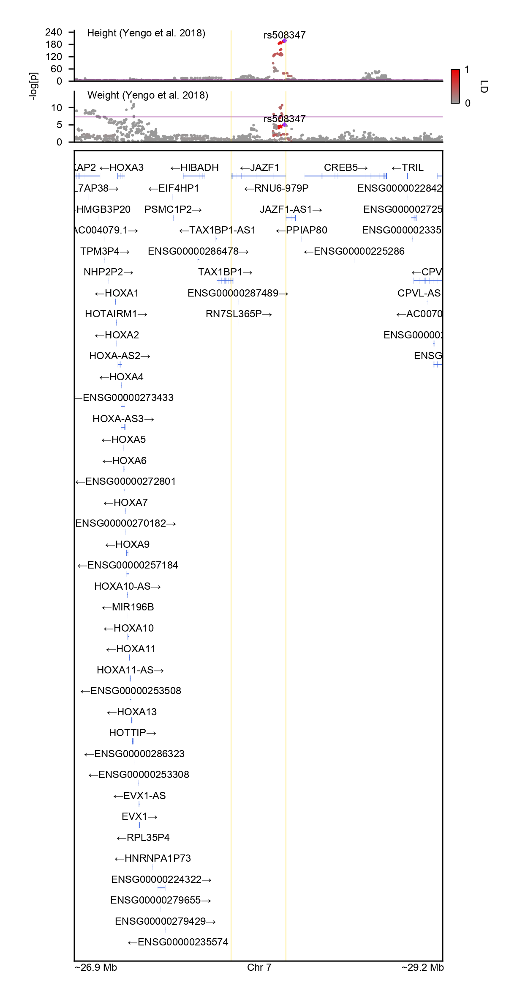

Plotting LocusZooom
After Parsing GENCODE and Munging summary statistics, we can now put the pieces together to draw the backbone of a LocusZoom plot. We focus on JAZF1 locus as an example, which reaches strong genome-wide significance in GWAS for height. By default, GeneticsMakie.plotlocus! returns a straightforward scatter plot.
gene = "JAZF1"
chr, start, stop = GeneticsMakie.findgene(gene, gencode)
range1 = start - 1e6
range2 = stop + 1e6
n = length(df)
titles = ["Height (Yengo et al. 2018)", "Weight (Yengo et al. 2018)"]
f = Figure(resolution = (306, 792))
axs = [Axis(f[i, 1]) for i in 1:(n + 1)]
for i in 1:n
GeneticsMakie.plotlocus!(axs[i], chr, range1, range2, df[i])
rowsize!(f.layout, i, 30)
lines!(axs[i], [range1, range2], fill(-log(10, 5e-8), 2), color = (:purple, 0.5), linewidth = 0.5)
Label(f[i, 1, Top()], "$(titles[i])", textsize = 6, halign = :left, padding = (7.5, 0, -5, 0))
end
rs = GeneticsMakie.plotgenes!(axs[n + 1], chr, range1, range2, gencode; height = 0.1)
rowsize!(f.layout, n + 1, rs)
GeneticsMakie.labelgenome(f[n + 1, 1, Bottom()], chr, range1, range2)
Colorbar(f[1:n, 2], limits = (0, 1), ticks = 0:1:1, height = 20,
colormap = (:gray60, :red2), label = "LD", ticksize = 0, tickwidth = 0,
tickalign = 0, ticklabelsize = 6, flip_vertical_label = true,
labelsize = 6, width = 5, spinewidth = 0.5)
Label(f[1:n, 0], text = "-log[p]", textsize = 6, rotation = pi / 2)
rowgap!(f.layout, 5)
colgap!(f.layout, 5)
for i in 1:(n + 1)
vlines!(axs[i], start, color = (:gold, 0.5), linewidth = 0.5)
vlines!(axs[i], stop, color = (:gold, 0.5), linewidth = 0.5)
end
resize_to_layout!(f)
f
To color variants by linkage disequilibrium (LD), we need a reference panel. If we already have one, we can use SnpArrays.jl to read in PLINK bed files. If not, we can download one as below. For the time being, we only download and convert a single chromosome from the 1000 Genomes Project.
using Pkg
Pkg.add("SnpArrays")using SnpArrays, Downloads
# Download 1000 Genomes data for a single chromosome
beagle = "http://bochet.gcc.biostat.washington.edu/beagle/1000_Genomes_phase3_v5a"
url = joinpath(beagle, "b37.vcf/chr$(chr).1kg.phase3.v5a.vcf.gz")
vcf = basename(url)
isdir("data/1kg") || mkdir("data/1kg")
isfile("data/1kg/$(vcf)") || Downloads.download(url, "data/1kg/$(vcf)")
# Convert vcf file to plink bed file (this step takes a while)
isfile("data/1kg/$(replace(vcf, ".vcf.gz" => ".bed"))") || vcf2plink("data/1kg/$(vcf)", "data/1kg/$(replace(vcf, ".vcf.gz" => ""))")
# Download sample metadata
url = joinpath(beagle, "sample_info/integrated_call_samples_v3.20130502.ALL.panel")
meta = basename(url)
isfile("data/1kg/$(meta)") || Downloads.download(url, "data/1kg/$(meta)")
# Subset data to the genomic region of interest and European samples
kgp = SnpData("data/1kg/$(replace(vcf, ".vcf.gz" => ""))")
meta = CSV.read("data/1kg/$(meta)", DataFrame)
eur = meta.sample[meta.super_pop .== "EUR"]
colinds = findall((kgp.snp_info.position .>= range1) .& (kgp.snp_info.position .<= range2))
rowinds = findall(in(eur), kgp.person_info.iid)
file = replace(vcf, ".vcf.gz" => ".eur")
SnpArrays.filter(kgp, rowinds, colinds; des = "data/1kg/$(file)")
# Apply minor allele frequency > 0.05 filter
kgp = SnpData("data/1kg/$(file)")
colinds = SnpArrays.filter(kgp.snparray; min_maf = 0.05)[2]
file = file * ".maf0.05"
SnpArrays.filter(kgp, trues(size(kgp)[1]), colinds; des = "data/1kg/$(file)")
kgp = SnpData("data/1kg/$(file)")We can color variants by LD with the index/sentinel SNP by using the ld keyword argument.
f = Figure(resolution = (306, 792))
axs = [Axis(f[i, 1]) for i in 1:(n + 1)]
for i in 1:n
GeneticsMakie.plotlocus!(axs[i], chr, range1, range2, df[i], ld = kgp)
rowsize!(f.layout, i, 30)
lines!(axs[i], [range1, range2], fill(-log(10, 5e-8), 2), color = (:purple, 0.5), linewidth = 0.5)
Label(f[i, 1, Top()], "$(titles[i])", textsize = 6, halign = :left, padding = (7.5, 0, -5, 0))
end
rs = GeneticsMakie.plotgenes!(axs[n + 1], chr, range1, range2, gencode; height = 0.1)
rowsize!(f.layout, n + 1, rs)
GeneticsMakie.labelgenome(f[n + 1, 1, Bottom()], chr, range1, range2)
Colorbar(f[1:n, 2], limits = (0, 1), ticks = 0:1:1, height = 20,
colormap = (:gray60, :red2), label = "LD", ticksize = 0, tickwidth = 0,
tickalign = 0, ticklabelsize = 6, flip_vertical_label = true,
labelsize = 6, width = 5, spinewidth = 0.5)
Label(f[1:n, 0], text = "-log[p]", textsize = 6, rotation = pi / 2)
rowgap!(f.layout, 5)
colgap!(f.layout, 5)
for i in 1:(n + 1)
vlines!(axs[i], start, color = (:gold, 0.5), linewidth = 0.5)
vlines!(axs[i], stop, color = (:gold, 0.5), linewidth = 0.5)
end
resize_to_layout!(f)
f
We can also color variants by LD with the same SNP by using the ld keyword argument.
f = Figure(resolution = (306, 792))
axs = [Axis(f[i, 1]) for i in 1:(n + 1)]
for i in 1:n
GeneticsMakie.plotlocus!(axs[i], chr, range1, range2, df[i], ld = (kgp, "rs508347"))
rowsize!(f.layout, i, 30)
lines!(axs[i], [range1, range2], fill(-log(10, 5e-8), 2), color = (:purple, 0.5), linewidth = 0.5)
Label(f[i, 1, Top()], "$(titles[i])", textsize = 6, halign = :left, padding = (7.5, 0, -5, 0))
end
rs = GeneticsMakie.plotgenes!(axs[n + 1], chr, range1, range2, gencode; height = 0.1)
rowsize!(f.layout, n + 1, rs)
GeneticsMakie.labelgenome(f[n + 1, 1, Bottom()], chr, range1, range2)
Colorbar(f[1:n, 2], limits = (0, 1), ticks = 0:1:1, height = 20,
colormap = (:gray60, :red2), label = "LD", ticksize = 0, tickwidth = 0,
tickalign = 0, ticklabelsize = 6, flip_vertical_label = true,
labelsize = 6, width = 5, spinewidth = 0.5)
Label(f[1:n, 0], text = "-log[p]", textsize = 6, rotation = pi / 2)
rowgap!(f.layout, 5)
colgap!(f.layout, 5)
for i in 1:(n + 1)
vlines!(axs[i], start, color = (:gold, 0.5), linewidth = 0.5)
vlines!(axs[i], stop, color = (:gold, 0.5), linewidth = 0.5)
end
resize_to_layout!(f)
f
By using Makie.jl's layout tools, it becomes easy to draw additional tracks. For example, in a separate track, the variants could be colored or could have varying sizes depending on their minor allele frequency. In another example, the variants could be colored based on their inclusion in a credible set post-fine-mapping.
GeneticsMakie.plotlocus! plots only the variants that are present in the reference panel, when the ld keyword argument is specified. Although SNPs that are missing in the reference panel could be plotted differently (e.g. with varying transparency and shape), GeneticsMakie.jl is designed to visualize 100s of phenotypes simultaneously in which case such discrepancy is hard to tell and is confusing. Hence, for more direct comparison of loci across phenotypes, only the variants that are found in the reference panel are shown.
There are several GWAS loci that harbor extremely small P values, in which cases the P values will be clamped to the smallest floating point number. Such cases are going to be more common in phenotypes that are reaching saturation in terms of GWAS discovery (e.g. height). In those cases, it is more commonplace to observe allelic heterogneity, and it might be more appropriate to plot alternative measures of strength of association (e.g. Z scores).
Oftentimes, chunks of LD blocks hug the gene boundaries.
Visualizing 1,500 genomic regions with 2 Mb window will more or less cover the entire human genome. Note that empirically speaking, the probability of an arbitrary 2 Mb window harboring at least one genome-wide significant hit across multiple phenotypes is higher than not harboring any significant association.